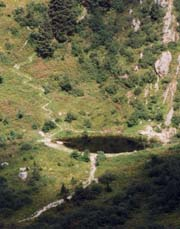
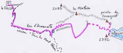

combe de Covagnet (2330 m)

Départ : la Frasse (1263 m)
Aller : 3,9 km, +1067 m, 180 min
Retour : 3,9 km, - 1067 m, 123 min
Difficulté : E/EE
Période : juillet - mi septembre
Remarque : -
Bibliographie : revue 2000 du CAF Annecy.
Monter par l’itinéraire AsF© 16.2 (page 103) au lac de Covagnet. Du lac, une sente raide, bien tracée mais non balisée, remonte la combe. Vers 2000, elle traverse à D, puis vers 2150 revient à G vers un vaste replat herbeux à 2330.
Au delà, une trace, sujette à quelques chutes de pierre, permettrait de remonter jusqu’au glacier (2700 m) : parcours dangereux, type haute montagne.
Photo Jeanne Viviand : la sente démarre du lac d'Armancette
